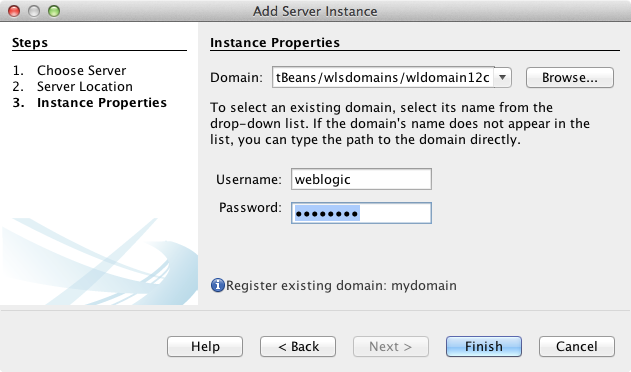
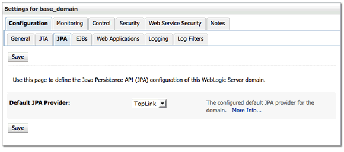
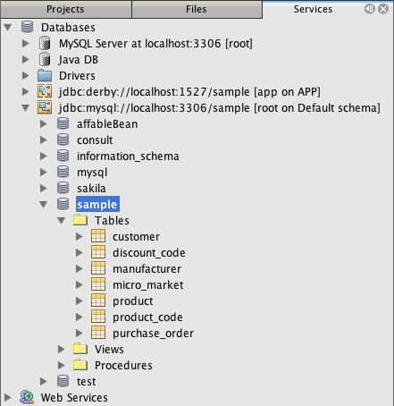
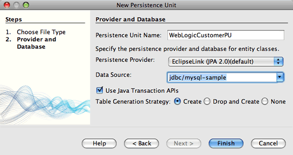
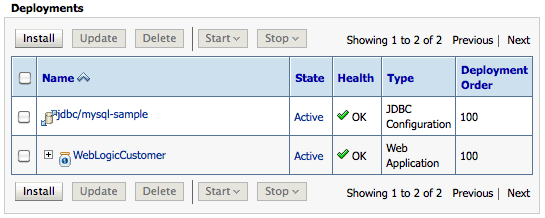
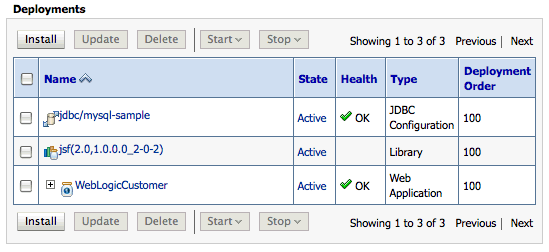

Apache NetBeans
Apache NetBeansLatest release
Desenvolvendo uma Aplicação Corporativa para o Oracle WebLogic Server
| This tutorial needs a review. You can edit it in GitHub following these contribution guidelines. |
Este tutorial demonstra como usar o IDE para criar uma aplicação Web que usa JSF (JavaServer Faces) 2.x e a JPA (Java Persistence API) 2.0 e, em seguida, como implantar a aplicação no Oracle WebLogic Server. Neste tutorial você registrará o Servidor WebLogic com o IDE e, em seguida, usará os assistentes no IDE para criar um recurso JDBC e as classes da entidade e do bean. Em seguida, você usará o IDE para implantar a aplicação ao servidor e registrará a nova origem de dados.

Figure 1. O conteúdo desta página se aplica ao NetBeans IDE 7.2, 7.3, 7.4 e 8.0
Para seguir este tutorial, são necessários os recursos e o software a seguir.
| Software ou Recurso | Versão Necessária |
|---|---|
Java EE 7.2, 7.3, 7.4, 8.0 |
|
Versão 6 ou 7 |
|
11g Rel 1 (10.3.4, 10.3.5), 12c (12.1.1.0) |
|
banco de dados de amostra |
MySQL ou JavaDB |
Observações.
-
Este projeto usa o banco de dados *
sample* que está disponível para os servidores de banco de dados MySQL e JavaDB. Para obter mais detalhes sobre como usar um servidor de banco de dados MySQL com o IDE e criar uma conexão com o banco de dados, consulte o tutorial Conectando a um Banco de Dados MySQL. Como alternativa, você pode usar a conexão do banco de dados para o banco de dadossampledo JavaDB que foi registrado com o IDE por default, se você instalou o GlassFish Server durante a instalação do IDE.
Registrando o Oracle WebLogic Server
Neste tutorial, você implantará uma aplicação Web no Oracle WebLogic Server. Para implantar aplicações no WebLogic Server a partir do IDE, será preciso registrar uma instância do servidor com o IDE. Esta seção descreve como usar o assistente Adicionar Instância de Servidor no IDE para registrar uma instância do WebLogic Server.
Download e Instalação do Servidor
Para que você possa registrar o servidor, será necessário fazer download do instalador do WebLogic Server e seguir as etapas descritas no guia de instalação do Oracle WebLogic Server para instalar o servidor em sua máquina local. Além de instalar o servidor, será necessário criar um domínio WebLogic antes de registrar o servidor com o IDE.
-
Faça download do instalador da página Downloads do Oracle WebLogic Server.
-
Instale o servidor seguindo as etapas do guia de instalação do Oracle WebLogic Server.
Lembre-se de anotar o nome de usuário e a senha.
-
Crie um domínio do WebLogic.
Você pode usar o Modo Gráfico do Assistente de Configuração do WebLogic para ajudá-lo a criar o domínio.
Consulte as seções a seguir do Guia de Instalação do WebLogic Server para obter detalhes sobre a instalação e a definição do servidor.
Registrando o Servidor no IDE
Depois de instalar o servidor, é possível usar o assistente Adicionar Instância de Servidor para registrar uma instância do servidor especificando o domínio do servidor.
-
Abra a janela Serviços.
-
Clique com o botão direito do mouse no nó Servidores e selecione Adicionar Servidor.
-
Selecione Oracle WebLogic Server. Clique em Próximo.
-
Clique em Procurar e localize o diretório de instalação do servidor. Clique em Próximo.
O IDE automaticamente identificará o domínio da instância do servidor.
-
Digite o nome de usuário e a senha do domínio.
-
Ativar JPA 2.0 (Somente Servidor WebLogic 10.3.4 ou 10.3.5). Clique em Finalizar.
Observação. Se estiver registrando uma instância do Servidor WebLogic 12c (12.1.1.0) você precisará ativar o JPA 2.0 porque JPA 2.0 é ativado por default. Se você estiver registrando uma instância do WebLogic Server 11g Rel 1 (10.3.4 ou 10.3.5), você poderá ativar o JPA 2.0 ao registrar o servidor ou no Gerenciador de servidores depois que o servidor estiver registrado. Consulte a seção Ativando Suporte para JPA 2.0 no Oracle WebLogic Server 11g abaixo para obter mais detalhes.

Figure 2. Assistente Adicionar Servidor
Quando você clica em Finalizar, o Oracle WebLogic Server será exibido sob o nó Servidores na janela Serviços.
Você pode clicar com o botão direito do mouse no nó do Oracle WebLogic Server e executar várias ações, incluindo:
-
Iniciar e Parar o Servidor
-
Abrir a Console de Administração no seu browser
-
Exibir o Log do Servidor na janela de Saída do IDE

Figure 3. WebLogic Server na janela Serviços
Abrindo a Console de Administração
Neste exercício você abrirá a Console de Administração para o WebLogic Server no browser. A Console de Administração permite configurar das definições do servidor e exibir aplicações implantadas e recursos disponíveis.
-
Inicie o servidor clicando com o botão direito do mouse no nó do Oracle WebLogic Server na janela Serviços e selecione Iniciar.
Quando o servidor é iniciado, é possível ver o log do servidor na guia Oracle WebLogic Server da janela de Saída.
Caso a guia não esteja visível, você poderá clicar com o botão direito do mouse no nó do Oracle WebLogic Server e selecionar Exibir Log do Servidor.
-
Clique com o botão direito do mouse no nó do Oracle WebLogic Server e selecione Exibir Console de Administração.
Quando você escolhe Exibir Console Admin, a tela de log-in do servidor é aberta no browser.
-
Faça log-in com o nome de usuário e a senha especificados na instalação o servidor.
Após o log-in, você verá a Home Page da Console de Administração no seu browser.

Figure 4. Console de Administração do Oracle WebLogic Server
Ativando Suporte para JPA 2.0 no Oracle WebLogic Server 11g
Se você estiver usando o Oracle WebLogic Server 11g (10.3.4 ou 10.3.5), será necessário ativar o suporte para a JPA 2.0 (Java Persistence API) e definir o provedor de persistência default para TopLink. O Oracle WebLogic Server 11g é um contêiner Java EE 5 e é compatível com o JPA 1.0 e JPA 2.0. O JPA 1.0 é ativado por default ao instalar o Oracle WebLogic Server 10.3.4 e 10.3.5, mas a instalação do WebLogic Server inclui os arquivos necessários para suportar o JPA 2.0. Você pode ativar o JPA 2.0 para o WebLogic Server ao registrar a instância do servidor ou no Gerenciador de servidores do IDE. Como alternativa, é possível seguir as etapas da seção Usando o JPA 2.0 com TopLink no WebLogic Server da documentação do WebLogic Server.
O WebLogic Server suporta a JPA (Java Persistence API) e vem com as bibliotecas de persistência Oracle TopLink e Kodo. Neste exercício ,você alterará o provedor de persistência default do Kodo para o Oracle TopLink na Console de Administração do WebLogic Server.
Observação. O suporte ao TopLink e ao JPA 2.0 é ativado por default ao instalar o WebLogic Server 12c.
Para ativar o suporte à JPA 2.0 no Gerenciador de servidores e definir o provedor de persistência default, execute as etapas a seguir.
-
Clique com o botão direito do mouse no nó do Oracle WebLogic Server na janela Serviços e selecione Propriedades para abrir o Gerenciador de servidores.
Ou então, selecione Ferramentas > Servidores no menu principal para abrir o Gerenciador de servidores.

Figure 5. Guia Domínio do Gerenciador de servidores
A guia Domínio do Gerenciador de servidores permite que você exiba e modifique o nome de usuário e a senha.
-
Clique em Ativar JPA 2. Clique em Fechar.
Quando você clicar em Ativar JPA 2, o IDE modificará o classpath do WebLogic Server para adicionar os arquivos e ativar o suporte ao JPA 2.
Observação. Você também pode ativar o JPA 2.0 utilizando o Oracle Smart Update ou modificando manualmente o classpath do WebLogic. Para obter mais detalhes sobre como ativar o suporte ao JPA 2.0, consulte os links a seguir.
-
Fórum de Discussão OTN: 11g Release 1 Conjunto de Patches 3 (WLS 10.3.4)
-
Executando a API do JPA 2.0 no WebLogic 10.3
-
Abra a Console de Administração do Oracle WebLogic Server no seu browser e efetue log-in.
-
Clique em Domínio na seção Configurações de Domínio da Console de Administração.
-
Clique na guia JPA na guia Configuração.
-
Selecione TopLink na lista drop-down Provedor JPA Default. Clique em Salvar.
-

Figure 6. guia JPA na Console de Administração do Oracle WebLogic Server
Quando você clica em Salvar, o Oracle TopLink se tornará o provedor de persistência default para aplicações implantadas no servidor quando nenhum provedor de persistência for explicitamente especificado pela aplicação.
Observação. A aplicação deste tutorial utilizará a JTA (Java Transaction API) para gerenciar as transações. A JTA é ativada por default quando o WebLogic é instalado. É possível modificar as definições da JTA na guia JTA da guia Configuração do domínio.
Criando a Aplicação Web
Neste tutorial, você criará uma aplicação Web Java EE. A aplicação Web conterá classes de entidade baseadas no banco de dados de amostra. Após criar a conexão com o banco de dados, você criará uma unidade de persistência e usará o assistente no IDE para gerar classes de entidade a partir do banco de dados. Em seguida, use um assistente para criar páginas JSF com base nas classes de entidade.
Criando o Projeto
Neste exercício, você usará o assistente de Novo Projeto para criar uma aplicação Web e especificar o Oracle WebLogic Server como servidor de destino.
-
Selecione Arquivo > Novo Projeto (Ctrl-Shift-N; ⌘-Shift-N no Mac).
-
Na categoria Java Web, selecione Aplicação Web. Clique em Próximo.
-
Digite WebLogicCustomer para o nome do projeto e especifique a localização do projeto.
-
Desmarque a opção Usar Pasta Dedicada, se ela estiver selecionada. Clique em Próximo.
-
Selecione Oracle WebLogic Server na lista drop-down Servidor.
-
Selecione Java EE 5 ou Java EE 6 Web como a Versão Java EE. Clique em Próximo.
Observação. Java EE 6 Web só está disponível se você registrou uma instância do WebLogic Server 12c.

Figure 7. WebLogic selecionado no Assistente de Novo Projeto
-
Selecione o framework JavaServer Faces.
-
Selecione JSF 2.x na lista drop-down Biblioteca do Servidor. Clique em Finalizar.

Figure 8. Painel Frameworks do assistente de Novo Projeto
Quando você clicar em Finalizar, o IDE criará o projeto da aplicação Web e abrirá o index.xhtml no editor. Na janela Projetos você pode ver se o IDE criou o arquivo do descritor weblogic.xml e web.xml no nó Arquivos de Configuração.

Figure 9. weblogic.xml selecionado na janela Projetos
Se você abrir web.xml no editor, você poderá ver que faces/index.xhtml foi especificado como a página de índice default. Se você abrir o arquivo weblogic.xml no editor, o arquivo se parecerá com o seguinte.
<?xml version="1.0" encoding="UTF-8"?>
<weblogic-web-app xmlns="http://xmlns.oracle.com/weblogic/weblogic-web-app" xmlns:xsi="http://www.w3.org/2001/XMLSchema-instance" xsi:schemaLocation="http://java.sun.com/xml/ns/javaee http://java.sun.com/xml/ns/javaee/web-app_2_5.xsd http://xmlns.oracle.com/weblogic/weblogic-web-app http://xmlns.oracle.com/weblogic/weblogic-web-app/1.0/weblogic-web-app.xsd">
<jsp-descriptor>
<keepgenerated>true</keepgenerated>
<debug>true</debug>
</jsp-descriptor>
<context-root>/WebLogicCustomer</context-root>
</weblogic-web-app>Observações.
-
Se o arquivo
weblogic.xmlcontiver o elemento<fast-swap>, confirme sefast-swapestá desativado, confirmando se o valor do elemento<enabled>é falso.
<fast-swap>
<enabled>*false*</enabled>
</fast-swap>-
Se o servidor de destino for WebLogic Server 11g (10.3.4 ou 10.3.5), a instalação do servidor incluirá as bibliotecas necessárias para usar JSF 1.2 e JSF 2.x nas aplicações, mas elas serão desativadas por default. É necessário implantar e instalar as bibliotecas JSF 2.x antes de utilizá-las. Se a biblioteca ainda não estiver instalada, o IDE solicitará a instalação da mesma, caso você selecione a biblioteca no assistente de Novo Projeto. A biblioteca precisa ser instalada uma única vez.

Figure 10. Caixa de diálogo Resolver Problema de Biblioteca do Servidor não Encontrada
Após criar a aplicação, quando você exibir o arquivo weblogic.xml do descritor, você verá que o IDE modificou o arquivo para especificar a biblioteca JSF que será utilizada com a aplicação.
<?xml version="1.0" encoding="UTF-8"?>
<weblogic-web-app xmlns="http://www.bea.com/ns/weblogic/90" xmlns:j2ee="http://java.sun.com/xml/ns/j2ee" xmlns:xsi="http://www.w3.org/2001/XMLSchema-instance" xsi:schemaLocation="http://www.bea.com/ns/weblogic/90 http://www.bea.com/ns/weblogic/90/weblogic-web-app.xsd">
<context-root>/WebLogicCustomer</context-root>
*<library-ref>
<library-name>jsf</library-name>
<specification-version>2.0</specification-version>
<implementation-version>1.0.0.0_2-0-2</implementation-version>
<exact-match>true</exact-match>
</library-ref>*
</weblogic-web-app>Criando a Conexão de Banco de Dados
Este tutorial utiliza um banco de dados chamado sample e é executado no servidor de banco de dados MySQL. Neste exercício, você usará o IDE para criar o banco de dados e preencher as tabelas do banco de dados. Em seguida, você abrirá uma conexão de banco de dados para o mesmo. O IDE utilizará os detalhes da conexão do banco de dados para criar a unidade de persistência para a aplicação. Para obter mais detalhes sobre como usar um servidor de banco de dados MySQL com o IDE, consulte o tutorial Conectando a um Banco de Dados MySQL.
Observação. Ou então, se você tiver instalado o GlassFish Server ao instalar o IDE, você poderá utilizar a conexão de banco de dados ao banco de dados de amostra do servidor de banco de dados do JavaDB registrado automaticamente durante a instalação do IDE.
Neste exercício, você criará e abrirá uma conexão para o banco de dados.
-
Clique com o botão direito do mouse no nó do Servidor MySQL na janela Serviços e selecione Conectar.
-
Digite o nome de usuário e a senha. Clique em OK.
-
Clique com o botão direito do mouse no nó Servidor MySQL e escolha Criar Banco de Dados.
-
Selecione sample na lista drop-down Novo Nome do Banco de Dados. Clique em OK.

Figure 11. Caixa de diálogo Criar Banco de Dados
Observação. Dependendo de como você tiver configurado o seu banco de dados, pode ser necessário especificar explicitamente as permissões de acesso para o novo banco de dados.
Quando você clicar em OK, o IDE criará o banco de dados de amostra e preencherá as tabelas do banco de dados. Se você expandir o nó do servidor MySQL, você verá que a lista de bancos de dados agora contém o novo banco de dados sample .
-
Expanda o nó do servidor MySQL e clique com o botão direito do mouse no banco de dados de amostra e selecione Conectar.
Quando você clicar em Conectar, um nó de conexão de banco de dados para o banco de dados aparecerá sob o nó Bancos de Dados. É possível expandir o nó para exibir as tabelas do banco de dados.

Figure 12. Nó do banco de dados de amostra na janela Serviços
O IDE usa a conexão de banco de dados para se conectar ao banco de dados e recuperar os detalhes do mesmo. O IDE também utiliza os detalhes da conexão de banco de dados para gerar o arquivo XML que o WebLogic Server utiliza para criar as fontes de dados no servidor e identificar os drivers apropriados.
Se você não tiver um banco de dados MySQL instalado, você poderá utilizar o banco de dados sample em execução no JavaDB. Caso o banco de dados sample não exista, você poderá clicar com o botão direito do mouse no nó MySQL (ou JavaDB) e selecionar Criar Banco de Dados.
Para obter mais detalhes, consulte o tutorial Conectando a um Banco de Dados MySQL.
Criando a Unidade de Persistência
Para gerenciar a persistência na aplicação, é necessário apenas criar uma unidade de persistência, especificar quais fonte de dados e gerenciador de entidade serão utilizados e permitir que o contêiner realize o trabalho de gerenciamento de entidades e persistência. Você criará uma unidade de persistência ao defini-la em persistence.xml .
Observação. Para fins de demonstração, neste exercício você utilizará o assistente de Nova Unidade de Persistência para criar o arquivo persistence.xml . O assistente o ajudará a especificar as propriedades da unidade de persistência. Você também pode criar uma unidade de persistência no assistente de Nova Classe de Entidade a Partir do Banco de Dados. Caso não haja unidades de persistência, o assistente fornecerá a opção de criar uma unidade de persistência para o projeto. O assistente criará uma unidade de persistência que utilizará o provedor de persistência default do WebLogic Server.
-
Clique com o botão direito do mouse no nó do projeto na janela Projetos e escolha Propriedades.
-
Na categoria Códigos-Fonte da janela Propriedades, selecione JDK 6 como o Formato Binário/Código-Fonte. Clique em OK.
-
Selecione Novo Arquivo (Ctrl-N; ⌘-N no Mac) para abrir o assistente para Novo Arquivo.
-
Selecione Unidade de Persistência na categoria Persistência. Clique em Próximo.
-
Mantenha o nome default para a unidade de persistência sugerido pelo assistente.
-
Selecione EclipseLink na lista drop-down Provedor de Persistência.
-
Selecione Nova Fonte de Dados na lista drop-down Fonte de Dados.
-
Digite jdbc/mysql-sample para o nome do JNDI na caixa de diálogo Nova Fonte de Dados.
-
Selecione a conexão do banco de dados de amostra MySQL. Clique em OK para fechar a caixa de diálogo.
-
Clique em Finalizar no assistente de Nova Unidade de Persistência.

Figure 13. Assistente Nova Unidade de Persistência
Quando você clicar em Finalizar, o arquivo persistence.xml será criado para o seu projeto e aberto no editor. Você pode clicar em Código-fonte na barra de ferramentas do editor para abrir persistence.xml no editor do código-fonte de XML. Esse arquivo contém todas as informações que o servidor precisa para gerenciar as entidades e a persistência da aplicação.
Observação. Se você não estiver utilizando una fonte de dados, o IDE irá gerar um arquivo XML sob o nó Recursos do Servidor (por exemplo, datasource-1-jdbc.xml ) que contenha os detalhes utilizados para criar a fonte de dados no servidor, incluindo o driver JDBC do banco de dados.
Se o arquivo persistence.xml for aberto no editor de código-fonte XML, você verá que o IDE especificou a versão da persistência como 2.0 e o esquema como persistence_2_0.xsd . O IDE especifica org.eclipse.persistence.jpa.PersistenceProvider como o provedor de persistência em persistence.xml . O EclipseLink é a implementação de persistência principal para o Oracle TopLink e a implementação de referência da JPA.
<?xml version="1.0" encoding="UTF-8"?>
<persistence *version="2.0"* xmlns="http://java.sun.com/xml/ns/persistence" xmlns:xsi="http://www.w3.org/2001/XMLSchema-instance" xsi:schemaLocation="http://java.sun.com/xml/ns/persistence http://java.sun.com/xml/ns/persistence/*persistence_2_0.xsd*">
<persistence-unit name="WebLogicCustomerPU" transaction-type="JTA">
<provider>org.eclipse.persistence.jpa.PersistenceProvider</provider>
<jta-data-source>jdbc/mysql-sample</jta-data-source>
<exclude-unlisted-classes>false</exclude-unlisted-classes>
<properties>
<property name="eclipselink.ddl-generation" value="create-tables"/>
</properties>
</persistence-unit>
</persistence>Também é possível selecionar o TopLink no assistente, nesse caso, o assistente especificará oracle.toplink.essentials.PersistenceProvider como o provedor de persistência em persistence.xml . O IDE adicionará as bibliotecas do Oracle TopLink Essentials - 2.0.1 ao classpath. Nas versões atuais e futuras do Oracle TopLink, o Oracle TopLink Essentials serão substituídos pelo EclipseLink. Onde for possível, você deverá optar por usar o Oracle TopLink/EclipseLink em vez do Oracle TopLink Essentials.
Criando as Classes de Entidade
Agora, você usará o assistente de Classes de Entidade do Banco de Dados para criar as classes de entidade com base no banco de dados relacional.
-
Selecione Novo Arquivo (Ctrl-N) para abrir o assistente de Novo Arquivo.
-
Selecione Classes de entidade do Banco de Dados na categoria Persistência. Clique em Próximo.
-
No assistente de Classes de Entidade do Banco de Dados, selecione jdbc/mysql-sample na lista drop-down Fonte de Dados e forneça a senha, se necessário.
-
Selecione a tabela Customer nas Tabelas Disponíveis e clique em Adicionar. Clique em Próximo.
O assistente lista a tabela customer e as tabelas relacionadas em Tabelas Selecionadas.
-
Digite ejb como o pacote para as classes geradas. Clique em Finalizar.
Quando você clicar em Finalizar, o IDE gerará as classes de entidade para cada tabela selecionada. É possível expandir o nó do pacote de código-fonte ejb para exibir as classes de entidade geradas.
Gerando Páginas JSF
Neste exercício, você usará um assistente para gerar páginas JSF com base nas classes de entidade existentes.
-
Clique com o botão direito do mouse no nó do projeto e selecione Novo > Outro.
-
Selecione Páginas JSF em Classes de Entidade na categoria JavaServer Faces do assistente de Novo Arquivo. Clique em Próximo.
-
Clique em Adicionar Tudo para criar páginas JSF para todas as entidades disponíveis. Clique em Próximo.
-
Digite web para o pacote de beans da sessão e para classes do controlador JPA. Clique em Finalizar.
Quando você clicar em Finalizar, o IDE gerará páginas JSF 2.0 e as classes do controlador e do conversor para as páginas JSF. O IDE gera um conjunto de páginas JSF para cada classe de entidade no diretório de Páginas Web default. O IDE também gera uma classe de bean gerenciado para cada entidade que acessa a classe de fachada da sessão correspondente para a entidade.
Executando o Projeto
Neste exercício, você criará e implantará a aplicação Web no WebLogic Server. Você utilizará o comando Executar no IDE para criar, implantar e iniciar a aplicação.
-
Clique com o botão direito do mouse no nó do projeto e selecione Executar.
Quando você clicar em Executar, o IDE criará o projeto e implantará o arquivo compactado WAR no WebLogic Server e criará e registrará a nova fonte de dados JDBC. A página de boas-vindas da aplicação (http://localhost:7001/WebLogicCustomer/) será aberta no seu browser.

Figure 14. Página de boas-vindas no browser
Se você fizer log-in na Console de Administração, você poderá clicar em Implantações na seção Seus Recursos Implantados para ver uma tabela com os recursos atualmente implantados no servidor.

Figure 15. Tabela de Implantações na Console de Administração do WebLogic Server
Você pode clicar no nome de cada recurso para exibir detalhes adicionais sobre o mesmo. Também é possível deletar recursos na tabela Implantações.
Observações sobre como implantar o Servidor WebLogic 10.3.4 ou 10.3.5.
-
Se você implantou a aplicação ao Servidor WebLogic 10.3.4 ou 10.3.5 você pode ver na tabela que a biblioteca JSF 2.0 também foi implantada para o servidor, além da aplicação web
WebLogicCustomer.ware a configuraçãojdbc/mysql-samplede JDBC.

Figure 16. Tabela de Implantações na Console de Administração do WebLogic Server
-
Se você expandir a instância do Oracle WebLogic Server na janela Serviços, será possível exibir os aplicações e os recursos implantados no servidor. Observe que os recursos JDBC foram criados no servidor e que as bibliotecas JSF estão instaladas.

Figure 17. Aplicações e recursos do WebLogic Server na janela Serviços
Para obter mais informações sobre a implantação de aplicações, consulte Implantando aplicações no WebLogic Server
Consulte Também
Para obter mais informações sobre o uso do NetBeans IDE para desenvolver aplicações Web usando Persistência Java e JavaServer Faces, consulte os seguintes recursos: